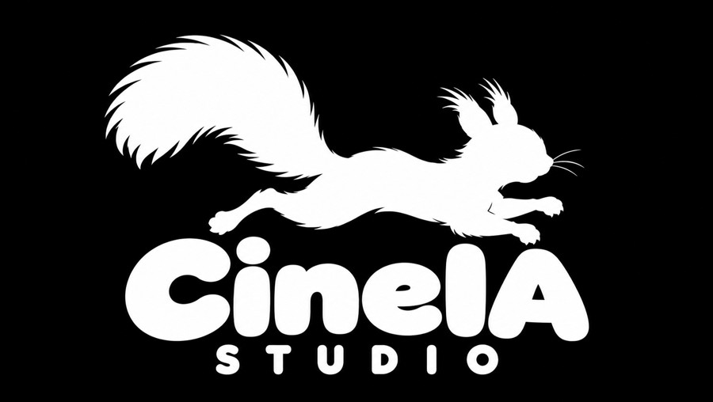
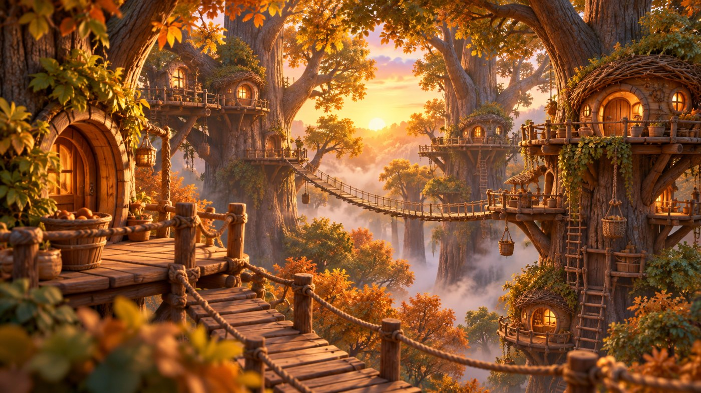

EDINBA · 2026
TALLER DE CREACIÓN AUDIOVISUAL CON IA
Del impulso narrativo a una obra audiovisual
trazable.

intención / forma / huella
← Tapa
{{cap.contador}}
← Portada del capítulo
·
El bosque cambia
Hablar
Leer en voz alta
ES · EN
{{t.label}}
{{t.label}}
{{fase.titulo}}
{{fase.lema}}
{{fase.videoTitulo}}
[POR GRABAR]
{{fase.galeriaTitulo}}
{{g.pie}}
{{paso.n}}
{{paso.name}}
{{paso.state}}
{{paso.intro}}
{{b.etiqueta}}
{{t}}
{{b.etiqueta}}
{{it.k}}
{{it.v}}
por producir
{{b.nota}}
{{b.etiqueta}}
{{b.nota}}
{{o.t}} · elegida
{{o.v}}
{{o.t}}
{{o.v}}
{{b.etiqueta}}
{{it.n}}
{{it.t}}
{{it.v}}
{{b.etiqueta}}
{{e.e}}
{{v}}
Fragmento. La letra completa se abre aquí mismo.
{{b.etiqueta}}
{{g.pie}}
{{b.etiqueta}}
{{c}}
{{c}}
{{b.nota}}
{{b.etiqueta}}
{{t.t}}
{{t.s}}
Cada marca es una viñeta; su ancho saldrá de la duración calculada en el desglose.
{{b.etiqueta}}
{{b.hecho}} / {{b.total}}
{{b.nota}}
{{b.etiqueta}} · Calidad de Justificación de Decisiones (CJD)
Agencia {{b.agencia}}
{{it.k}}
{{it.v}}
{{b.etiqueta}}
{{t.n}}
0:00
1:00
2:00
3:00
4:00
5:00
5:35
{{l.t}}
{{b.nota}}
Para leer
El Observador Audiovisual
{{c}}
Análisis de cine
{{x.t}}
{{x.canal}}
Para practicar
{{b.pixar.t}}
Khan Academy
{{b.nota}}
{{a.t}}
{{a.t}}
{{b.urlTexto}}
{{b.nota}}
← {{paso.antes}}
{{paso.despues}} →
Del libro
El Observador Audiovisual
{{c}}
Versión de trabajo
Para ver
CinePrime · análisis de cine
{{fase.verNota}}
{{fase.extraTexto}}
Para pasar al siguiente capítulo
{{fase.prueba}}
{{fase.empezar}}